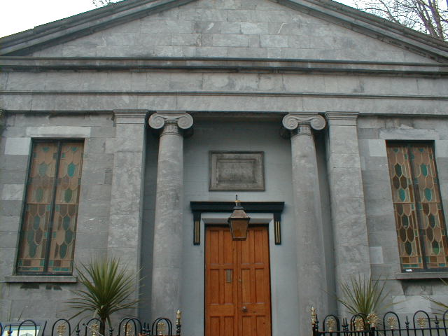

White Memorial
White Memorial
The Building was formaerly a weslyan/ methodist chapel it was designed and built in 1843 by william Tinsley
at a cost of £600.00, half of which was raised locally. It is a greek revival style and the facade is framed
corner pilasters supporting a plain pediment.
It is crowned at the apex and the corners with palmettos. This decorative stonework also appearson the County
Museum and on the porch at Knocklofty house.
The Chapel replaced one built by Thomas Tinsley father of Willaim. The Theatre commemorates James White, founder
member of St. Mary's choral society who now have ownership of the building.

© 2004 history Of Clonmel